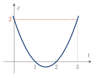

5.5 Primitivas y cambio de variable
Para aplicar la regla de Barrow hace falta una primitiva. Algunas se reconocen directamente; otras se obtienen con un cambio de variable.
Integrales inmediatas
Si F es una primitiva de f, las demás son F+C. El conjunto de todas ellas es la integral indefinida: \int f(x)\,dx=F(x)+C.
Recuerda: integrales inmediatas
\begin{array}{ll} \displaystyle\int a\,dx=ax+C & \displaystyle\int \sin f\;f'\,dx=-\cos f+C\\[3mm] \displaystyle\int x^n\,dx=\frac{x^{n+1}}{n+1}+C,\ \ n\ne-1 & \displaystyle\int \cos x\,dx=\sin x+C\\[3mm] \displaystyle\int f^n f'\,dx=\frac{f^{n+1}}{n+1}+C,\ \ n\ne-1 & \displaystyle\int \cos f\;f'\,dx=\sin f+C\\[3mm] \displaystyle\int \frac{f'}{f}\,dx=\ln|f|+C & \displaystyle\int \frac{f'}{\cos^2 f}\,dx=\tan f+C\\[3mm] \displaystyle\int e^x\,dx=e^x+C & \displaystyle\int \frac{f'}{\sin^2 f}\,dx=-\cot f+C\\[3mm] \displaystyle\int e^{f} f'\,dx=e^{f}+C & \displaystyle\int \frac{f'}{\sqrt{1-f^2}}\,dx=\arcsin f+C\\[3mm] \displaystyle\int a^{f} f'\,dx=\frac{a^{f}}{\ln a}+C,\ \ a>0,\ a\ne1 & \displaystyle\int \frac{-f'}{\sqrt{1-f^2}}\,dx=\arccos f+C\\[3mm] \displaystyle\int \sin x\,dx=-\cos x+C & \displaystyle\int \frac{f'}{1+f^2}\,dx=\arctan f+C\\[3mm] & \displaystyle\int \frac{f'}{\sqrt{f^2\pm1}}\,dx=\ln\left|f+\sqrt{f^2\pm1}\right|+C \end{array}
Cambio de variable
Teorema 5.4 (cambio de variable)
Sea f continua en [a,b] y sea x=x(t), con derivada continua en [\alpha,\beta], x(\alpha)=a y x(\beta)=b. Entonces \int_a^b f(x)\,dx=\int_\alpha^\beta f\big(x(t)\big)\,x'(t)\,dt.
Demostración
Si F es una primitiva de f, por la regla de la cadena F\big(x(t)\big) es una primitiva de f\big(x(t)\big)\,x'(t). Con Barrow, las dos integrales valen F(b)-F(a).
Ejemplo 5.12
Calcular I=\displaystyle\int_8^{27}\frac{dx}{1+\sqrt[3]{x}} con el cambio x=t^3.
Es dx=3t^2\,dt, y si x=8, t=2; si x=27, t=3. Como t^2=(t^2-1)+1: I=\int_2^3\frac{3t^2}{1+t}\,dt=3\int_2^3\left(t-1+\frac{1}{1+t}\right)dt=3\left[\frac{t^2}{2}-t+\ln(1+t)\right]_2^3=\frac92+3\ln\frac43. Comprobación: vale 5.363, y el integrando está entre \frac14 y \frac13 en un intervalo de longitud 19: entre 4.75 y 6.33.
Ejemplo 5.13
Calcular \displaystyle\int e^{\sin^2x}\sin 2x\,dx con el cambio u=\sin^2x. (2013/14 3E)
Es du=2\sin x\cos x\,dx=\sin2x\,dx. Por tanto, \int e^{\sin^2x}\sin 2x\,dx=\int e^u\,du=e^u+C=e^{\sin^2x}+C, deshaciendo el cambio al final.
Comprobación: al derivar el resultado se recupera el integrando.
Ejemplo 5.14
Calcular \displaystyle\int_0^2 x\,dx con el cambio x=(t-1)(t-2), tomando distintos intervalos [\alpha,\beta] (Figura 5.9).

Figura 5.9. Cambio x=(t-1)(t-2).
Es dx=(2t-3)\,dt, así que el integrando es (t^2-3t+2)(2t-3), con primitiva P(t)=\frac12t^4-3t^3+\frac{13}{2}t^2-6t. Sirve cualquier intervalo con x(\alpha)=0 y x(\beta)=2: \begin{aligned} \text{de } t=1 \text{ a } t=3:&\quad P(3)-P(1)=0-(-2)=2,\\ \text{de } t=2 \text{ a } t=3:&\quad P(3)-P(2)=0-(-2)=2,\\ \text{de } t=2 \text{ a } t=0:&\quad P(0)-P(2)=0-(-2)=2. \end{aligned} El resultado es siempre 2, como da directamente \left[\frac{x^2}{2}\right]_0^2: solo importan los valores de x en los extremos.
Con los contenidos de esta sección puedes hacer los ejercicios 5.11–5.11.